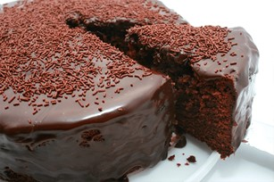

Bolo de Chocolate
- 3 ovos
- 1 xícara de açúcar
- 1 xícara de farinha de trigo
- 1/2 xícara de cacau em pó
- 1 colher de chá de fermento em pó
- 1/2 xícara de óleo
- 1 xícara de água quente
Modo de Preparo:
- Preaqueça o forno a 180°C.
- Em uma tigela, bata os ovos e o açúcar até obter uma mistura homogênea.
- Adicione o óleo e continue batendo.
- Peneire a farinha e o cacau e adicione à mistura, batendo em velocidade baixa.
- Adicione a água quente e continue batendo até incorporar todos os ingredientes.
- Por último, adicione o fermento e misture delicadamente.
- Despeje a massa em uma forma untada e leve ao forno por aproximadamente 40 minutos ou até que um palito inserido no centro saia limpo.
- Deixe esfriar antes de desenformar.
Cobertura:
Ingredientes:
- 1 lata de leite condensado
- 1 colher de sopa de manteiga
- 3 colheres de sopa de chocolate em pó
- 100 gramas de granulado
Modo de Preparo:
Em uma panela, misture o leite condensado, a manteiga e o chocolate em pó. Leve ao fogo baixo, mexendo sempre, até obter um brigadeiro cremoso. Cubra o bolo frio com o brigadeiro e depois finalize com o granulado.
Bolo de Cenoura

- 3 cenouras médias
- 4 ovos
- 1 xícara de óleo
- 2 xícaras de açúcar
- 2 xícaras de farinha de trigo
- 1 colher de sopa de fermento em pó
Modo de Preparo:
- Em um liquidificador, bata as cenouras, os ovos e o óleo.
- Transfira a mistura para uma tigela e adicione o açúcar, misturando bem.
- Aos poucos, adicione a farinha de trigo e o fermento, mexendo até obter uma massa homogênea.
- Despeje a massa em uma forma untada e leve ao forno preaquecido a 180°C por cerca de 40 minutos ou até que um palito inserido no centro saia limpo.
- Deixe esfriar antes de desenformar.
Cobertura:
Ingredientes:
- 1 lata de leite condensado
- 1 colher de sopa de manteiga
- 3 colheres de sopa de chocolate em pó
Modo de Preparo:
Em uma panela, misture o leite condensado, a manteiga e o chocolate em pó. Leve ao fogo baixo, mexendo sempre, até obter um brigadeiro cremoso. Cubra o bolo frio com o brigadeiro.